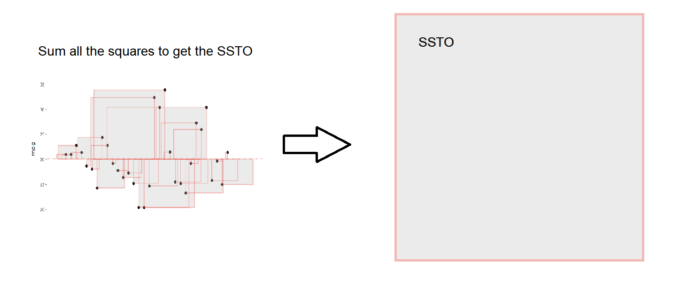

Univariate data is a fundamental concept in the field of statistics, providing valuable insights into a single variable’s characteristics within a dataset. The analysis of univariate data focuses on two primary aspects: central tendency and variability. Central tendency describes the central value of the data, such as the mean, median, or mode, while variability explores how the data points spread around the central value, using measures like range, variance, and standard deviation. In this section, we will delve into the intricacies of univariate data analysis, using the ‘mpg’ (miles per gallon) column from the well-known ‘mtcars’ dataset as our example. This approach will enable us to better understand the distribution and behavior of fuel efficiency in various car models, ultimately illuminating the importance of univariate data analysis in making informed decisions and predictions.
The univariate data
The ‘mtcars’ dataset is a classic dataset in the field of statistics and data analysis, originating from the 1974 edition of Motor Trend magazine. It contains data on 32 different car models, focusing primarily on various technical aspects and performance indicators of automobiles from the early 1970s. The dataset includes information such as miles per gallon (mpg), number of cylinders, horsepower, weight, and other specifications. The ‘mpg’ column within the ‘mtcars’ dataset represents the fuel efficiency of each car model, measured in miles per gallon. In other words, it indicates the number of miles a car can travel on one gallon of fuel.
In the visualizations below, notice two things. The a lot of the points tend to cluster around a central point, and that the rest of the points tend to deviate away.
Code
fig1 = (bind_rows( (mtcars %>%mutate(mpg =mean(mpg),X=0,type='0: The average')), (mtcars %>%mutate(X=0,type='1: The values')) ) %>%ggplot(aes(x=X, y = mpg, frame = type)) +geom_point(color ='darkblue',fill='lightblue',size=2.5,shape=21,alpha=.9) +geom_hline(aes(yintercept =mean(mpg)), linetype ="dashed", color ="red", size = .75,alpha=.5) +theme_classic() +xlab("") +theme(axis.ticks.x =element_blank(), axis.text.x =element_blank()) +coord_cartesian(xlim=c(-1,10))) %>%ggplotly() %>%animation_opts(200, easing ="elastic", redraw = F)fig2 = (bind_rows( mtcars %>%mutate(type='1: The values'), mtcars %>%mutate(type='0: The average',mpg =mean(mpg)) ) %>%ggplot(aes(y=mpg, frame=type))+geom_boxplot(color ='darkblue',fill='lightblue',size=1)+theme_classic() +theme(axis.ticks.x =element_blank(), axis.text.x =element_blank())) %>%ggplotly() %>%animation_opts(200, easing ="elastic", redraw = F)subplot(fig1, fig2) %>%layout(title ='Side By Side Subplots')
1.2 Central Tendency
Central tendency is a measure that aims to describe the center or typical value of a dataset. There are three primary measures of central tendency: mean, median, and mode. Each of these measures provides a different perspective on the central value of the data and can be more or less appropriate depending on the nature of the data and its distribution.
1.2.1 Mean
Mean: The mean, also known as the arithmetic average, is the sum of all data points divided by the total number of data points. It is a widely used measure of central tendency and provides a good indication of the overall level of the dataset. However, the mean can be sensitive to outliers or extreme values, which may result in a distorted representation of the central value.
\[
\bar{Y} = \frac{\sum_{i=1}^n Y_i}{n}
\]
Calculating the mean for the ‘mpg’ column involves summing up the fuel efficiency values of all car models and dividing by the total number of car models in the dataset. The mean mpg provides an indication of the average fuel efficiency across all car models, although it may be influenced by any extreme values or outliers in the data.
n =32# number of carsY_i = mtcars$mpg # list of car mpgsY_bar =sum(Y_i)/nprint(paste("The mean value of mpg is", Y_bar))
[1] "The mean value of mpg is 20.090625"
1.2.2 Median
Median: The median is the middle value of a dataset when the data points are arranged in ascending or descending order. If there is an odd number of data points, the median is the middle value; if there is an even number of data points, the median is the average of the two middle values. The median is less sensitive to outliers or extreme values than the mean and is particularly useful for datasets with skewed distributions.
Y_median =median(Y_i)print(paste("The median value of mpg is", Y_median))
[1] "The median value of mpg is 19.2"
1.2.3 Mode
Mode: The mode is the value that occurs most frequently in a dataset. A dataset can have multiple modes, no mode, or a single mode. The mode can be a useful measure of central tendency for categorical or discrete data, where the mean and median may not be appropriate. However, the mode may not always provide a meaningful representation of the central value, especially in datasets with several modes or a low frequency of the most common value.
Y_mode =median(Y_i)print(paste("The modal value of mpg is", Y_mode))
[1] "The modal value of mpg is 19.2"
1.3 Variability
1.3.1 Variance
Variance is a measure of variability or dispersion in a dataset, representing the average of the squared differences from the mean. It helps us understand how spread out the data points are from the average value. To calculate the variance for univariate data, follow these steps:
Calculate the mean: First, find the mean (arithmetic average) of the dataset by adding up all the data points and dividing the sum by the total number of data points.
Calculate the deviations: For each data point, calculate the deviation from the mean by subtracting the mean from the individual data point’s value.
Square the deviations: Square each deviation obtained in step 2. This step removes the negative signs and emphasizes larger deviations from the mean.
Calculate the sum of squared deviations: Add up all the squared deviations from step 3. This is called the Total Sum of Squares.
Divide the Total Sum of Squares by the sum: This is the variance. It represents the average squared deviation of the data points from the mean.
Step One: The mean
See above
Step Two: Distance from the mean
Every dot below represents a car in which each vertical location of the dot represents how high or low the mpg is. We can notice that there are some near the average and some farther away from the average. (The average is the horizontal dashed red line in the middle)
We can make a list of distances to represent how far away from the mean each car/point is. The cars/points with a very long red line either have a really high or really low mpg while the cars/points with a very small red line have a more average mpg.
To calculate the distance from the mean for any given point/car, we just need two things. The miles per gallon of the car, and the mean mpg.
\[
\text{Distance from the mean} = Y_i - \bar{Y}
\]
# Car 22 has an mpg of 15.5 Below is the distance from the mean for car 2215.5- Y_bar
[1] -4.590625
Step Three: Square the deviations:
Squares are squares.
When you have a literal square where the side is \(n\) units long, the area of that square is \(n^2\). We can take the distances and square them. Below is what this would look like visually.
Squaring the deviations in the calculation of variance serves several important purposes in understanding the variability or dispersion of a dataset.
First, squaring the deviations eliminates any negative signs that may arise from subtracting the mean from individual data points. Without squaring, the sum of deviations would always equal zero, rendering it an ineffective measure of variability. By squaring the deviations, we ensure that all values are positive, allowing us to properly assess the dispersion.
Second, squaring the deviations emphasizes larger deviations from the mean, giving more weight to outliers or extreme values in the dataset. This property is particularly useful in detecting and understanding the impact of outliers on the overall variability of the data. By emphasizing these larger deviations, the variance provides a comprehensive picture of the spread of the data points, including the influence of extreme values.
Lastly, squaring the deviations ensures that the variance has mathematical properties that are useful in statistical analysis, such as being additive for independent variables. This property allows for the combination of variances from multiple variables or datasets, facilitating more complex analyses and comparisons.
Below is the code to find the squared distance from the mean:
# Car 22 has an mpg of 15.5 Below is the distance from the mean for car 22(15.5- Y_bar)^2
[1] 21.07384
Step Four: Calculate the sum of squared deviations

From the plot above, look at the squares create above. We can sum up all the squares to make a mega-square. This is called the \(\text{Total Sum of Squares}\) or \(\text{SSTO}\)
The sum of observations divided by the number of observations is an average. We have the total sum of squares, but instead of dividing it by the number of observations, we will divide it by number of observations - 1.
Degrees of Freedom
Degrees of freedom refer to the number of independent pieces of information that are available in the sample. Estimates about the population can be calculated from our sample. For example, the mean can be generated from our sample. However, if we use an estimate to get another estimate- we have lost a degree of freedom. For example, the formula for variance uses the mean, meaning a “degree of freedom” is lost- thus degrees of freedom is equal to \(n-1\).
\[
\text{Variance} = \sigma^2= \frac{\text{SSTO}}{\text{degrees of freedom}}
\]
The code for the variance is below
variance = SSTO / (n-1)variance
[1] 36.3241
1.3.2 Standard Deviation
The variance represents the average squared distance away from the mean- so to see just the distance away from the mean, square root it.